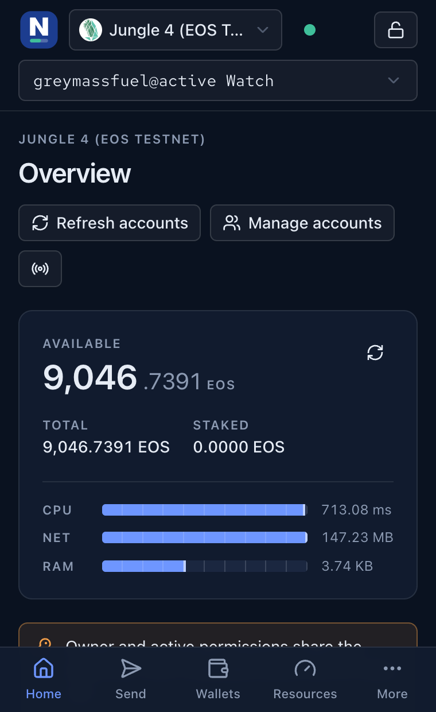
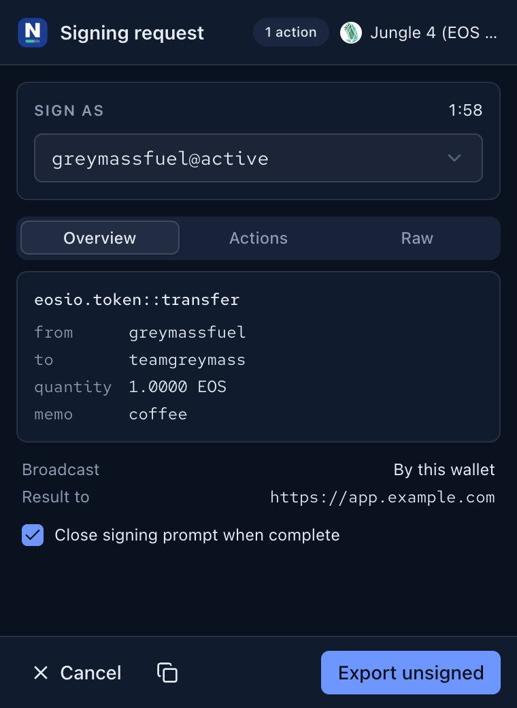
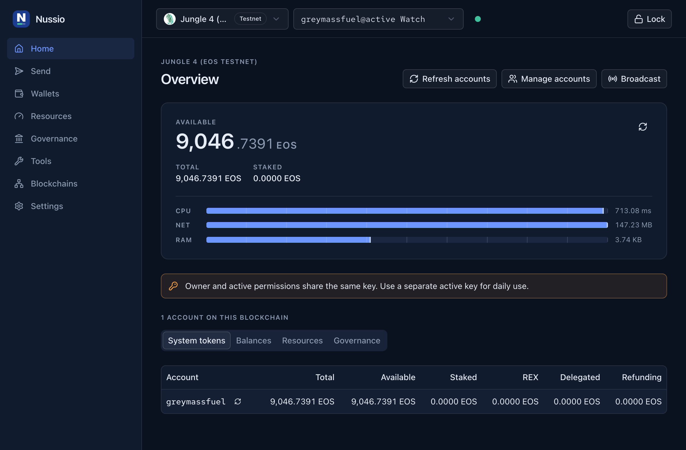
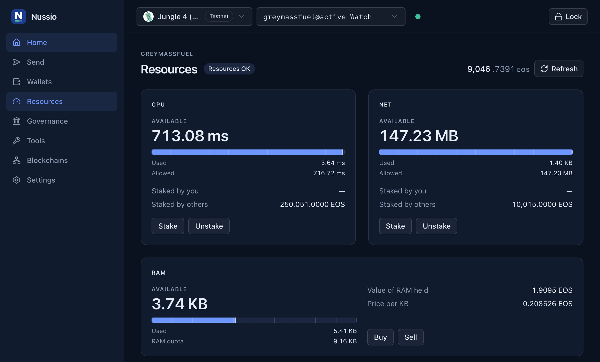
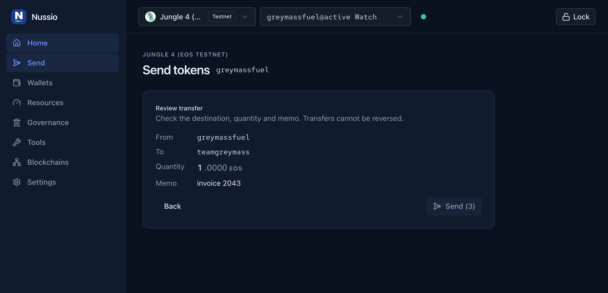
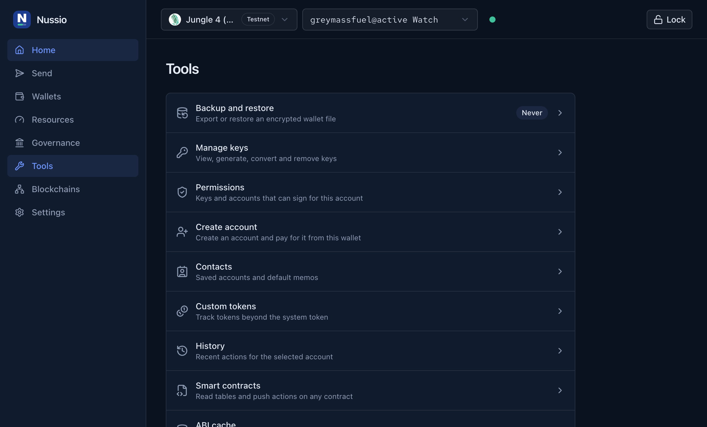
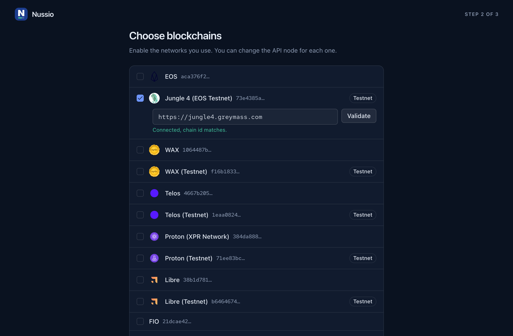

Local key custody
Keys are generated or imported into an encrypted keyring that never leaves your machine. Watch-only accounts need no key at all.
Browser extension · Antelope · MIT
Nussio Wallet signs transactions and answers EOSIO Signing Requests for EOS, WAX, Telos, Proton, Libre, FIO, UX Network and any custom chain you add. It speaks the same ESR and anchor-link session protocol as Anchor, so dApps that already support Anchor work unchanged.
What it does
Everything the desktop Anchor workflow covers, rebuilt for Manifest V3 and a 360 px popup: balances, resources, voting, history and the maintenance tools you only miss when they are gone.
Keys are generated or imported into an encrypted keyring that never leaves your machine. Watch-only accounts need no key at all.
esr: links, in-page requests and sealed buoy messages all land in the
same approval queue. dApps built for Anchor connect without changes.
CPU, NET and RAM on the same draft-mark gauge everywhere, with staking, renting and low-resource warnings before a transaction fails.
Vote for block producers or a proxy, and read your account history from the chain's Hyperion index without leaving the wallet.
Encrypted export in the Nussio format or an Anchor Desktop compatible one, and restore of either — including Anchor's v1 per-wallet keyring.
Stored keys with the wallets that use them, password-gated reveal with QR, a K1 generator, and a WIF / PVT and legacy / modern public key inspector.
Saved accounts with a default memo that fills the send form, plus tokens tracked by contract and symbol or scanned from a Hyperion token index.
Two keypairs, a mandatory owner-key export, and a shareable ESR link for whoever pays — plus premium name bidding and permission management.
Call any smart contract action, ping API endpoints for latency and head block, and inspect or clear the ABI cache.
Three surfaces, one wallet
Every screen is built at 360 px first, so the toolbar popup is the whole wallet, not a cut-down version of it. The side panel keeps it open next to a dApp; the full tab adds tables and wider layouts. Dark mode follows your system.


Screens
Captured from the built extension running against Jungle 4, the EOS testnet — no renders, no mockups.




Security
Signing happens inside the service worker. Pages ask for a signature and get one back; the private key stays where it was decrypted.
Keys are sealed under a password-derived key — PBKDF2-SHA256, 600,000 rounds — and only the wallet service in the service worker can read them.
Unlocked keys live in storage.session and are cleared on lock, on the
idle timeout and on every browser restart.
A guard validates sender id, origin, service key and call path before any proxied service call runs, closing the CVE-2023-40580 class of extension RPC bug.
Signing requests over 16 KB are refused and compressed payloads that inflate past 500 KB are dropped, so a zip bomb cannot wedge the worker.
updateauth, linkauth and deleteauth on owner
or active permissions are rejected unless you explicitly opt in.
Every message and stored item has a zod schema, the threat model lives in
docs/security.md, and CI runs typecheck, lint, unit and end-to-end
tests on every pull request.
Nussio Wallet is pre-1.0 software. You are responsible for your own keys: export a backup before you rely on it, and keep your owner key offline.
Install
No store listing yet. These builds are packaged by GitHub Actions from the latest release, after the same typecheck, lint, unit and end-to-end run the repository uses.
The build is not signed by Mozilla, so Firefox loads it as a temporary add-on and drops it on restart. For a permanent install use Firefox Developer Edition or Nightly with xpinstall.signatures.required set to false, or build and sign it yourself.

# or build from source
git clone https://github.com/lshaf/nussio-wallet.git
cd nussio-wallet
pnpm install
pnpm build # dist/chrome-mv3
pnpm build:firefox # dist/firefox-mv2Older tagged builds live on the releases page.